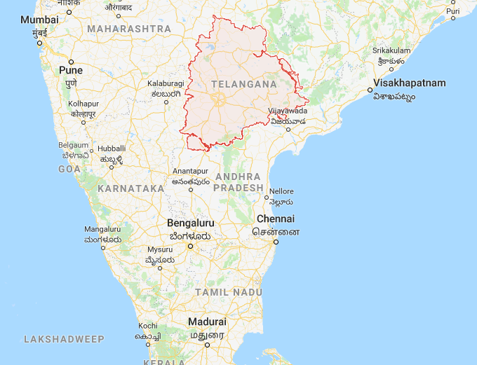

Telangana is one of the 29 states in India. Formed on 2 June 2014 as the newest state of India, from the northwestern part of Andhra Pradesh, Telangana has an area of 112,077 square kilometres (43,273 sq mi) and a population of 35,193,978 (2011 census). It is the twelfth-largest state in India, and the twelfth-most populated state in India. Its major cities include Hyderabad, Warangal, Karimnagar, Nizamabad and Khammam. Telangana is bordered by the states of Maharashtra to the north and northwest, Chhattisgarh to the north, Karnataka to the west and Andhra Pradesh to the east and south.Telangana had a history as the Telugu-speaking region of the princely state of Hyderabad, ruled by the Nizam of Hyderabad. It joined the Union of India in 1948. In 1956, the Hyderabad State was dissolved as part of the linguistic reorganisation of states and Telangana was merged with former Andhra State to form Andhra Pradesh. Following a movement for separation, Telangana was awarded separate statehood on 2 June 2014. Hyderabad will continue to serve as the joint capital city for Andhra Pradesh and Telangana for no more than ten years.
